O 1 a 1 com o Palmeiras, diante de 38.631 pessoas, levou o Flamengo a 80 pontos e 24 vitórias. O Palmeiras ainda pode igualar a pontuação, mas não o número de vitórias. É o 10º título nacional pela contagem do clube. Pág. 12.
Na Câmara, o PLP 299 chega aprovado pelo Senado por 69 a 2. O relator, o cearense Mauro Benevides Filho, disse que não proporá mudanças, para o texto ir direto à sanção. Pág. 2.
S&P 500 −3,70% e Nasdaq −5,28%, com chips e IA em queda. Pág. 4.
🧫 OPAS: na Klebsiella, a resistência a carbapenêmicos chega a 26% nas Américas. Pág. 7.
💰 Bastter e antigolpe (20–21) · 😂 Tirinhas (22–23) · 📜 Lua cheia e plantão (24–25) · 🏛️ Gratidão (26–27) · ⚖️ Desejo e espera (28–29).
O projeto. O PLP 299/2026 passou no Senado em duas etapas: texto-base em 12/11, por 45 a 31, e texto final em 18/11, por 69 a 2. Três destaques da oposição foram rejeitados, entre eles o teto de gasto de 0,6% proposto por Rogério Marinho (PL-RN). O texto restringe a compensação de créditos tributários, limita a Comprev a R$ 3 bilhões por ano, reduz a Lei Kandir a R$ 2 bilhões anuais até 2030 e amplia o corte linear de benefícios tributários.
Quanto rende. As estimativas divergem: cerca de R$ 50 bilhões em 2027 (SBT), de R$ 45,1 a R$ 56,1 bilhões (estimativas oficiais citadas pelo Times Brasil) ou R$ 70,6 bilhões em relação a 2026 (Agência Câmara). Também diverge quando vale o teto de 2% de alta real da despesa.
Na Câmara. O presidente Hugo Motta convocou sessão extraordinária. O relator, Mauro Benevides Filho (União-CE), tem reunião com a bancada do PL antes da votação. Em 19/11, o presidente Lula disse que quem deseja o controle fiscal é ele, não o mercado.
Escala 6x1. Em 14/11, o ministro Luiz Fux pediu destaque e levou as ADIs 8041 e 8042 ao plenário físico. Em 17/11, o relator Flávio Dino converteu o caso em julgamento de mérito e abriu prazos para Câmara, Senado, AGU e PGR. A liminar de 12/11 segue valendo: 42 horas semanais a partir de 16/12. A data do julgamento não foi marcada.
Dosimetria. O ministro Alexandre de Moraes pautou para 4/12, no plenário virtual, quatro ações sobre a Lei 15.402/2026.
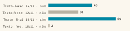
| Seg 23 | Sessão da Câmara, 18h |
| Ter 24 | Possível continuação |
| Qua–Qui | CMO analisa relatórios do Orçamento |
| 4/12 | Dosimetria no STF (virtual) |
| 16/12 | 42 horas semanais |
⛈️ Temporal em Tupanciretã (RS): balanço da Defesa Civil fala em 5 mortos e 265 feridos em 38 municípios, com calamidade homologada. Há novo alerta para 23 e 24/11.
💵 O Orçamento de 2027 prevê R$ 1.741, ante R$ 1.621 hoje. O valor final depende do INPC até novembro.
O jornal não toma partido. Publica fatos, números oficiais e declarações atribuídas, com o mesmo tratamento a todos os lados.
Mpox. A Secretaria da Saúde (Sesa) contou 175 casos confirmados até 19/11, contra 85 em 15/11. Foram 151 só em novembro, com 448 notificações em 17 municípios: Fortaleza tem 145, Caucaia 7 e Sobral 4. A Sesa investiga uma possível nova cepa, ainda sem confirmação laboratorial, e não prevê o pico. A vacina é oferecida antes e depois da exposição a grupos elegíveis.
Sem chuva. Nenhum dos 184 municípios registrou chuva no sábado e no domingo, segundo a Funceme. Para hoje e terça, há só baixa chance de chuva de madrugada e de manhã na Região Metropolitana, no Maciço de Baturité, no norte do Jaguaribe e no litoral do Pecém. No resto do estado, sol forte, com máximas de até 38 °C.
Incêndios. O Decreto 37.624, de 19/11, declara emergência por risco de incêndios florestais até fevereiro de 2027, com base na nota da Funceme sobre o El Niño muito forte. O decreto de 13/11, por estiagem, segue valendo em 65 municípios; Sobral não está na lista.
Santa Casa. Na Tribuna Popular da Câmara, a direção pediu apoio e emendas da bancada federal. A unidade é referência de alta complexidade para 55 municípios e tem o maior centro de hemodiálise do estado, com 64 poltronas. Ela negocia que o contrato passe do município para o Estado.
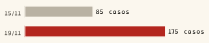
Previsões automáticas falam em até 38 °C em Sobral, mas divergem entre si. Use o boletim da Funceme como referência.
Mpox grave: pense em lesão ocular, proctite com dor intensa, infecção bacteriana secundária e imunossupressão, sobretudo HIV com CD4 baixo. Notifique e siga o protocolo da Sesa.
Precaução: contato e gotículas; aerossol em procedimento que gera aerossol. Lesões cobertas e EPI completo na coleta de material.
Calor de 38 °C: idoso, renal e cardiopata desidratam rápido. Reveja diurético e balanço hídrico nas prescrições da semana. Intermação: nº 015, p.8.
Caged de setembro: +5.156 vagas no Ceará, o pior setembro desde 2020. No ano, 42.903 vagas, 7.669 a menos que em 2025.
Último dado localizado: 15,4 mil casos e 27 óbitos até outubro, quase 4 vezes 2025, com DENV-2 em 86% das amostras.
Aqui. Na quinta, o Ibovespa caiu 0,69%, para 166.376 pontos, e acumulou perda de 3,53% na semana; outra fonte registra 166.181 pontos. O dólar subiu pela sexta sessão seguida, a R$ 5,9344, com alta de cerca de 4,95% na semana. O Banco Central vendeu US$ 1 bilhão em leilão extraordinário. Estrangeiros tiraram R$ 5 bilhões da bolsa no mês, até o dia 17.
Lá fora. Na sexta, o S&P 500 caiu 3,70% e entrou em correção; a Nasdaq perdeu 5,28% e zerou o ganho do ano; o Dow Jones recuou 1,93%. O índice de medo VIX foi a 35,89. A queda veio de chips e IA, depois de reportagem da Reuters sobre revisão da SEC em possíveis problemas contábeis da Nvidia, sem conclusão de irregularidade. Pág. 11.
Juros. O Fed mantém a taxa entre 3,75% e 4,00%, e a ata de 18/11 aponta possibilidade de alta. A reunião é em 8 e 9/12, a mesma data do Copom. No Brasil, a Selic ficou em 13,75% em 4/11, por unanimidade, interrompendo cinco cortes.
Inflação. O IPCA de outubro subiu 0,14%, e o acumulado em 12 meses, 4,63%, está acima do teto da meta, de 4,5%. A prévia de novembro, o IPCA-15, sai na quinta (26).
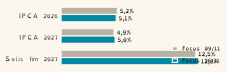
| Seg 23 | Focus, 8h25 |
| Ter 24 | Confiança do consumidor (FGV) |
| Qua 25 | PCE e PIB dos EUA; Livro Bege |
| Qui 26 | IPCA-15, 9h · Ação de Graças nos EUA |
| Sex 27 | IGP-M, contas públicas e PNAD |
Dólar alto não é sinal de compra nem de venda. Viagem ou compra em moeda estrangeira? Defina o valor antes e divida a compra em datas, sem tentar acertar o dia.
Queda na bolsa atrai "oportunidades" por mensagem. Ninguém sério promete recuperar perdas. Desconfie de grupo, robô ou "mentor" com pressa.
Regra das 72 h: decisão financeira tomada no dia da manchete costuma ser impulso. Espere três dias, releia e só então decida.
COP31. O chamado Pacto de Antalya não passou, e o texto final não menciona petróleo, gás ou carvão. A União Europeia, uma coalizão liderada por França e Panamá e as Ilhas Marshall rejeitaram a proposta; a Arábia Saudita defendeu a captura de carbono. Foram aprovadas uma decisão sobre transição justa e um cronograma para fiscalizar o financiamento climático. Os planos nacionais atuais levam a cerca de 2,5 °C de aquecimento. Os EUA ficaram fora pelo 2º ano. A COP32 será em Adis Abeba.
Golfo. No domingo, o Bahrein acusou o Irã de atingir uma instalação industrial civil, com incêndio e sem vítimas. A Guarda Revolucionária diz ter atacado duas bases americanas e radares Patriot. A agência marítima britânica UKMTO relatou dois petroleiros atingidos, sem vítimas. Uma delegação do Catar esteve em Teerã; o chanceler Abbas Araghchi exige o fim do bloqueio aos portos iranianos. Não há cessar-fogo.
Ucrânia. Na noite de 19 para 20/11, a Rússia lançou mais de 400 drones e 110 mísseis, segundo Volodymyr Zelensky, e atingiu três pontes sobre o Dnipro em Kiev; o governo contou 8 mortos e 28 feridos. As embaixadas da Áustria e dos Países Baixos foram danificadas, sem feridos. Zelensky diz ter aceitado a proposta americana de conversas a três antes do Natal, talvez junto ao G20 da Flórida, em 14 e 15/12.
Gaza e Líbano. O Ministério da Saúde de Gaza registrou 2 mortes no domingo e 1.661 desde o cessar-fogo de outubro de 2025. Em Israel, ninguém formou maioria; o prazo vai até 6/12. No Líbano, o presidente Joseph Aoun cobrou a retirada israelense e o desarmamento do Hezbollah.
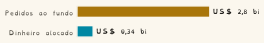
Liga o Golfo Pérsico ao Golfo de Omã. Tem cerca de 39 km no ponto mais estreito, entre o Irã e a península de Musandam, de Omã. Por ali passa perto de um quinto do petróleo consumido no mundo, segundo a agência de energia dos EUA (EIA). Por isso, cada petroleiro atingido mexe no preço do Brent (p.4).
Respostas: Floriano Peixoto · Andrômeda · IBM Simon.
Dia Nacional de Combate ao Câncer Infantil (Lei 11.650/2008), ligado à campanha Novembro Dourado · Dia de Ação de Graças do Trabalho, no Japão.
O câncer é a 1ª causa de morte por doença entre 1 e 19 anos no Brasil. A chance de cura passa de 70% no Sul e no Sudeste, mas fica perto de 50% no Norte (SBP). Diagnóstico precoce muda o desfecho (p.7).
Deodoro havia fechado o Congresso em 3/11/1891. Sob pressão, com a Marinha rebelada, renunciou 20 dias depois. A crise inaugurou a fase de Floriano na República.
Resistência. Em 18/11, a OPAS informou que a resistência a carbapenêmicos em Klebsiella pneumoniae passou de cerca de 15% em 2015 para 26% em 2024 nas Américas. Na E. coli, de 3% para 5%. No Acinetobacter baumannii, a média é de 77%. O tema da semana é "Uma Só Saúde, Uma Só Ação".
Enxaqueca. Em 19/11, a Anvisa aprovou o atogepante, primeiro bloqueador oral do CGRP em comprimido diário no país, para prevenção em adultos com 4 ou mais crises por mês. Preço e incorporação ao SUS ainda não foram definidos.
Dengue em 2027. O Ministério da Saúde projeta alta de 20% a 40% no próximo ano por causa do El Niño. Em 2026, foram 489.197 casos prováveis e 368 óbitos até o início de novembro. A vacina do Butantan está suspensa desde 8/6, após eventos adversos graves em análise; no SUS, segue a Qdenga, para 10 a 14 anos.
Rio Grande do Sul. A Força Nacional do SUS chegou em 21/11 a Tupanciretã, atingida por uma supercélula com suspeita de tornado. O hospital local foi danificado.
Câncer infantil. Febre sem causa, palidez, manchas roxas, dor óssea que acorda a criança, caroço que cresce e reflexo branco no olho em fotos merecem avaliação rápida.
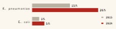
Cultura antes do antibiótico, revisão em 48–72 h, menor espectro possível e duração curta quando a diretriz permite. Siga o protocolo institucional e a CCIH.
No ON-SCENE, sem sorteio, quem recebeu ECPR pode ter sido escolhido por ter melhor prognóstico. Resultado promissor, não regra.
Conteúdo educativo. Decisão clínica depende do paciente, da diretriz vigente e do protocolo do serviço.
| Etapa | O que fazer | ⚠️ Pegadinha de prova |
|---|---|---|
| 1. 2º insulto | IOT se Glasgow ≤ 8. Evite hipóxia e hipotensão: PAS ≥ 100 mmHg dos 50 aos 69 anos e ≥ 110 dos 15 aos 49 e acima de 70. | O alvo da BTF é de PAS, não de PAM. Uma só hipotensão piora o desfecho. |
| 2. Monitorar | PIC no TCE grave (Glasgow 3–8) com TC anormal. Tratar PIC > 22 mmHg. | O corte era 20 na 3ª edição. O BEST-TRIP não mostrou ganho do monitor sobre exame e imagem seriados. |
| 3. Perfusão | PPC = PAM − PIC, com alvo de 60 a 70 mmHg. Cabeceira a 30°, pescoço neutro, sem colar apertado. | Forçar PPC > 70 com volume e vasopressor aumenta SDRA. |
| 4. Escada | Sedação e analgesia, normocapnia (PaCO₂ 35–45), normotermia, osmoterapia com manitol ou salina hipertônica e drenagem de liquor se houver DVE. | Hiperventilação profilática não; só breve, como ponte na herniação. |
| 5. Não fazer | Corticoide não. Hipotermia profilática não. Craniectomia é decisão neurocirúrgica individual. | DECRA: mais desfecho ruim. RESCUEicp: menos morte, mais sobrevivente dependente. |
Conteúdo educativo. Siga o protocolo institucional.
Motociclista de 28 anos, Glasgow 6, pupila esquerda dilatada e PAS de 92. Caso inventado, para estudo.
Conduta: IOT com estabilidade hemodinâmica, PAS ≥ 110 e oxigenação sem hiperóxia extrema. Cabeceira a 30°, osmoterapia e hiperventilação só breve, como ponte. TC e neurocirurgia: hematoma extradural é cirúrgico. Corticoide, nunca.
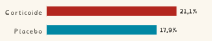
Hipertensão, bradicardia e respiração irregular sinalizam herniação. A PA alta ali protege a perfusão cerebral: não trate como emergência hipertensiva isolada. Gancho com a p.9.
Hiponatremia piora o edema cerebral; vigie sódio e osmolaridade durante a osmoterapia. Evite hiperglicemia e hipoglicemia.
| Etapa | O que fazer | ⚠️ Pegadinha de prova |
|---|---|---|
| 1. Separar | PA em geral > 180/120. Com lesão aguda de órgão-alvo = emergência. Sem lesão = urgência ou hipertensão grave assintomática. | Cefaleia ou ansiedade com PA alta, sem lesão, não é emergência. |
| 2. Procurar lesão | Cérebro (AVC, encefalopatia), coração (SCA, edema agudo), aorta, rim, retina (fundo de olho) e gestação. ECG, troponina, creatinina e urina. | Fundo de olho com hemorragia, exsudato ou papiledema muda a classificação. |
| 3. Emergência | UTI e droga IV titulável. Baixar no máximo 25% na 1ª hora, depois a 160/100–110 em 2 a 6 h e ao normal em 24–48 h. | Queda brusca causa isquemia cerebral, coronária e renal. |
| 4. Alvos próprios | Dissecção: PAS < 120 e FC < 60, o mais rápido possível. Pré-eclâmpsia grave e feocromocitoma: PAS < 140 na 1ª hora. AVC isquêmico para trombólise: < 185/110 antes. | Na dissecção, betabloqueador antes do vasodilatador, para evitar taquicardia reflexa. |
| 5. Urgência | Repouso, reavaliação, ajuste ou retomada do anti-hipertensivo oral e retorno em poucos dias. | Nifedipino de ação rápida sublingual: contraindicado. |
Conteúdo educativo. Siga o protocolo institucional.
Mulher de 58 anos, PA 220/130, dor torácica "rasgando" para o dorso e pulsos assimétricos. Caso inventado, para estudo.
Conduta: pense em dissecção. Betabloqueador IV até FC < 60, depois vasodilatador para PAS < 120, analgesia e angiotomografia. Tipo A é cirúrgico. Supra em parede inferior? Veja a p.10 antes de trombolisar.
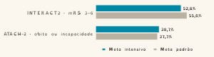
PA alta + bradicardia no TCE: trate a PIC, não a pressão (p.8).
Cefaleia, convulsão e alteração visual com PA alta: pense em encefalopatia posterior reversível.
Nitroprussiato, nitroglicerina e betabloqueador IV são os mais disponíveis.
Transdutor linear sobre a pálpebra fechada, muito gel e potência baixa. Meça o diâmetro da bainha do nervo óptico (DBNO) 3 mm atrás do globo, nos planos transversal e sagital, e tire a média dos dois olhos. Valores acima de cerca de 5,0 a 5,7 mm sugerem PIC acima de 20 mmHg; os cortes variam entre estudos.
⚠️ Pegadinha: é triagem, não substitui o monitor invasivo. Não comprima o olho e não use com trauma ocular aberto.
Pericardite: supra de ST côncavo em muitas derivações, sem respeitar território, infradesnível de PR (e supra de PR em aVR), sem imagem em espelho fora de aVR e V1 e sem onda Q. Infarto: supra convexo num território, infra recíproco e Q. Na repolarização precoce, a razão ST/T em V6 fica abaixo de 0,25.
⚠️ Pegadinha: dissecção tipo A pode ocluir a coronária direita e dar supra inferior. Trombolisar ali é desastre (p.9).
Na pressão de suporte, cada ciclo é disparado pelo paciente, a pressão é fixa e o ciclo termina quando o fluxo cai a cerca de 25% do pico. Ajuste a PS para volume corrente de 6 a 8 mL/kg de peso predito e FR abaixo de 30, sem musculatura acessória. A TRE pode ser feita com PSV de 5 a 8 cmH₂O.
⚠️ Pegadinha: não há FR de reserva. Sem drive (sedação profunda, TCE grave), vem a apneia: ajuste o alarme e a ventilação de backup. PS alta demais gera esforços ineficazes.
DBNO medido onde? 3 mm atrás do globo.
PR deprimido e supra difuso? Pense em pericardite.
PSV tem FR de reserva? Não: ajuste o backup.
Anthropic. A empresa fixou o preço em US$ 83 por ação na quarta (18), com 980 milhões de ações, e captou US$ 81,3 bilhões, acima dos US$ 75 bilhões da SpaceX em junho. Na estreia na Nasdaq, com o código ANT, abriu a US$ 111,50 e fechou a US$ 97,17 (+17%). Na sexta, recuou 8,5%, para US$ 88,91, ainda 7% acima do preço da oferta. O valor de mercado varia nas contas, conforme o total de ações considerado.
Nvidia. O balanço de terça (17) trouxe receita de US$ 115,8 bilhões, alta de 103% em um ano, e previsão de US$ 130 bilhões para o próximo trimestre. Na sexta, a ação chegou a cair cerca de 13% após a Reuters relatar que a SEC revisa possíveis problemas contábeis. Não há conclusão de irregularidade. A empresa é comandada interinamente por Colette Kress desde a saída de Jensen Huang, em 12/11.
Novidades. O Google lançou em 18/11 o Gemini 4 Neon para assinantes Pro e Ultra. A OpenAI apresentou em 13/11 o ChatGPT Wallet, em que agentes fazem compras com aprovação biométrica a cada pedido, por ora só nos EUA.
Contexto Regras. No Brasil, o PL 2338, da IA, está na Câmara, e o governo quer votá-lo em 2026. Na União Europeia, em 2/12 passam a valer a proibição de apps que "despem" pessoas em fotos e a marcação de conteúdo gerado por IA.
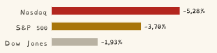
| Qua 18 | Preço da oferta: US$ 83 |
| Qui 19 | Fecha a US$ 97,17 (+17%) |
| Sex 20 | Fecha a US$ 88,91 (−8,5%) |
9/11 O iOS 27.2.1 corrigiu falhas de segurança. 19/11 A 2ª beta pública do iOS 27.3 saiu na quinta.
A atualização de novembro (KB5132061) tem erros de instalação, como 0x800f0993. Paliativo citado: instalar pelo Microsoft Update Catalog.
Falha grave no VMware vCenter, nota 9,8 de 10, já explorada: correção publicada em 19/11. Quem administra servidores deve aplicar.
A decisão. No sábado (21), diante de 38.631 pessoas, Jhon Arias abriu o placar para o Palmeiras aos 11 minutos. No 2º tempo, Samuel Lino empatou; as fontes divergem sobre o minuto, 30 ou 35. O 1 a 1 levou o Flamengo de Leonardo Jardim a 80 pontos e 24 vitórias. O Palmeiras, com 74, ainda pode chegar a 80, mas perde no 1º critério: terá no máximo 23 vitórias.
A conta dos títulos. O clube e a imprensa contam 10, incluindo 1987. Listas que não incluem 1987 chegam a 9. O jornal registra a contagem do clube e a divergência.
A rodada. Bahia 0 × 1 Coritiba e Chapecoense 1 × 2 Cruzeiro, no sábado. No domingo: Athletico-PR 4 × 2 Remo, Fluminense 1 × 0 Mirassol, com gol de Riquelme no fim, e Bragantino 1 × 0 Vasco.
A degola. A Chapecoense já tinha caído. O Remo, com 32 pontos e dois jogos, não alcança mais Corinthians, Vitória e Mirassol: também está rebaixado. Inter e Grêmio, com 38, ocupam o 17º e o 18º lugares e jogam hoje.
Seleção. O Brasil de Carlo Ancelotti fechou 2026 com 14 jogos: 9 vitórias, 2 empates e 3 derrotas. Perdeu para o Japão por 3 a 2, em 14/11, e goleou Singapura por 7 a 0, em 17/11, com três gols de Vinícius Júnior. Os próximos amistosos são em março de 2027, sem datas definidas.
| 1 Flamengo © | 80 | 11 Coritiba | 45 |
| 2 Palmeiras | 74 | 12 São Paulo* | 44 |
| 3 Cruzeiro | 66 | 13 Botafogo* | 42 |
| 4 Fluminense | 63 | 14 Vitória* | 41 |
| 5 Athletico-PR | 57 | 15 Mirassol | 41 |
| 6 Bahia | 54 | 16 Corinthians* | 40 |
| 7 Atlético-MG* | 51 | 17 Inter* | 38 |
| 8 Bragantino | 50 | 18 Grêmio* | 38 |
| 9 Santos* | 50 | 19 Remo ↓ | 32 |
| 10 Vasco | 47 | 20 Chape ↓ | 21 |
* 35 jogos. © campeão. ↓ rebaixado. 17º a 20º caem.
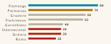
Hoje: Inter × Vitória (19h30) · Botafogo × São Paulo (20h) · Santos × Grêmio (21h; local diverge nas fontes). Ter 24: Chapecoense × Palmeiras (18h). Qua 25: Atlético-MG × Corinthians (20h). 29/11 e 2/12: últimas rodadas.
Kevin Viveros (Athletico) 21 · Pedro (Flamengo) 20 · Gabigol (Santos) 16 · Kaio Jorge (Cruzeiro) 14 · Samuel Lino (Flamengo) 13.
Sáb 28, 17h: Palmeiras × Estudiantes, final da Libertadores, em Montevidéu. 6/12: Grêmio × Palmeiras, final da Copa do Brasil em jogo único, no Mané Garrincha.
Cruzeiro 3º, garantido na Libertadores pela conta do jornal · Fluminense 4º, idem · Atlético-MG vice da Sul-Americana, pega o Corinthians na quarta · Corinthians 16º, com eleição em 28/11 · Vasco 10º após perder em Bragança · Botafogo 13º, de Tite, recebe o São Paulo · Santos 9º, com Gabigol · Internacional sem Alan Patrick, suspenso · Grêmio divide a reta final com a decisão da Copa do Brasil.
Fortaleza. No domingo (22), no Heriberto Hülse, o lateral Marcelo Hermes marcou de cabeça, após escanteio cobrado por Otero, no início do 2º tempo; as fontes citam 8, 9 ou 10 minutos. O VAR anulou um gol de Marcinho, e o goleiro João Ricardo evitou um placar maior. A volta é no sábado (28), às 20h, no Castelão. O Leão de Vojvoda terminou a fase de pontos em 4º, com 65, e o Criciúma de Umberto Louzer em 5º, com 62.
A conta. Vitória do Fortaleza por um gol empata o agregado e dá o acesso pela melhor campanha. Empate ou derrota no Castelão classificam o Criciúma. No outro confronto, Atlético-GO e Vila Nova empataram por 1 a 1; a volta é na sexta (27), às 20h.
Ceará. O Vovô ficou na Série B e ainda não começou a planejar 2027. Não há técnico nem diretor de futebol definidos, o presidente deve deixar o cargo e o Conselho Deliberativo elege a nova direção em 4/12. O elenco se reapresenta em 15/12.
Sobral. O Vila Real goleou o Atlético Cearense por 5 a 1 no domingo, no Estádio do Junco, com três gols de Jailson da Silva, e garantiu vaga na semifinal da Taça Fares Lopes, que dá ao campeão uma vaga na Copa do Brasil de 2027. Adversário e data ainda não foram divulgados. Do Guarany, nenhuma notícia nova na semana.
| Dom 22 | Criciúma 1 × 0 Fortaleza |
| Atlético-GO 1 × 1 Vila Nova | |
| Sex 27 · 20h | Vila Nova × Atlético-GO |
| Sáb 28 · 20h | Fortaleza × Criciúma, no Castelão |
Já subiram: Novorizontino (campeão) e Juventude.
De 5/1 a 7/3, com 10 clubes, turno único de 9 rodadas, semifinal em jogo único e final em ida e volta. Clássico-Rei em 31/1. Nenhum clube de Sobral na Série A estadual.
Série A: Fortaleza, se subir. Série B: Ceará. Série C: Floresta, o único cearense. Série D: Ferroviário, Iguatu e Horizonte.
Perdeu por 1 a 0 para o Coritiba na Fonte Nova, com Acevedo expulso, e caiu para 6º, com 54 pontos. O próximo jogo, contra o Mirassol, está marcado para quarta (25), às 21h30.
Com 41 pontos e técnico novo, Rafael Lacerda, visita o Inter hoje, às 19h30, no Beira-Rio. Ainda não venceu fora de casa no ano.
O Santa Cruz sobe para a Série B de 2027. ABC e ASA sobem da Série D para a C. Sport, CRB e Náutico seguem na Série B.
A CBF reservou a janela de 24/3 a 13/6/2027 para as copas regionais. Formato, sorteio e participantes ainda não foram divulgados.
24 anos separam este playoff da última decisão de Série B entre Fortaleza e Criciúma, em 2002, lembrada pelo Diário do Nordeste.
F1. Max Verstappen herdou a pole depois que Kimi Antonelli, mais rápido no treino, perdeu cinco posições por troca de unidade de potência. O holandês venceu pela 75ª vez, 0s639 à frente de Lando Norris, com Oscar Piastri em 3º. Antonelli, já campeão desde o México, em 1º/11, foi 4º. A corrida teve Safety Car, batida de George Russell e punições de 10 s a Hamilton e Leclerc. Gabriel Bortoleto (Audi) foi o 12º, logo fora dos pontos, e Rafael Câmara (Haas), o 16º. Faltam Catar, de 27 a 29/11, e Abu Dhabi. Pela conta do jornal, a Mercedes já tem o título de construtores: são 149 pontos de vantagem com 86 em disputa.
MotoGP. Em Portimão, no domingo (22), a Aprilia fez o pódio com Marco Bezzecchi, Jorge Martín e Raúl Fernández. Marc Márquez foi o 8º e garantiu o título de 2026, o 8º na categoria principal, igualando o recorde. Valência fecha a temporada.
Tênis. Em Turim, no domingo, Carlos Alcaraz bateu Alexander Zverev em dois sets e ganhou o ATP Finals pela 1ª vez. É o primeiro espanhol campeão desde Àlex Corretja, em 1998. O placar do tie-break diverge entre as fontes.
Sul-Americana. No sábado (21), em Barranquilla, o Boca Juniors venceu o Atlético-MG por 2 a 0, gols de Ascacíbar, aos 16, e Merentiel, aos 48 minutos. É o 3º título do Boca. O Galo de Cuca é vice pelo 2º ano seguido.
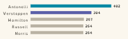
| 1º | Verstappen (Red Bull) |
| 2º | Norris (McLaren) +0s639 |
| 3º | Piastri (McLaren) +1s529 |
| 12º | Bortoleto (Audi) 🇧🇷 |
Final 8 de 24 a 29/11, sem o Brasil. Ter 24: Tchéquia × Canadá. Qua 25: Itália × Coreia do Sul. Qui 26: Grã-Bretanha × Alemanha e Áustria × Espanha.
Liverpool 4 × 0 Manchester United. Arsenal lidera a Premier League. Barcelona 3 × 2 Villarreal: o Barça soma 36 pontos, contra 33 do Real Madrid. Na França, o PSG venceu o Nice por 3 a 2.
Ter 24: Man City × Napoli, Arsenal × Dortmund, Real Madrid × PSV. Qua 25: PSG × Roma, Club Brugge × Liverpool, Lille × Bayern, Sporting × Man United.
Sáb 28, 17h: Palmeiras × Estudiantes, no Centenário, em Montevidéu, onde o argentino venceu o jogo extra de 1968. O Palmeiras busca o 4º título.
Vôlei. Na Superliga Feminina 2026/27, o Sesc RJ Flamengo tem 100% de aproveitamento: seis vitórias e 18 pontos. Minas e Bauru, com 17, fazem o duelo das 18h30 de hoje; às 21h, o líder enfrenta o Osasco. No masculino, o Sada Cruzeiro perdeu para o Viapol São José por 3 a 2 na sexta (20), mas segue na frente, com 18 pontos em sete jogos. O Itambé Minas venceu os cinco que disputou.
Seleção feminina. O técnico Arthur Elias convocou o grupo para os últimos amistosos de 2026, contra o Japão, em 29/11, em Hiroshima, e 5/12, em Okayama. Kerolin, lesionada no pé, está fora. Marta não foi chamada, mas segue nos planos para 2027. Ary Borges, Adriana e Amanda Gutierres voltaram à lista.
Copa de 2027. A abertura no Brasil está marcada para 24/6/2027, segundo a Agência Brasil. O jornal publica a lista de sedes quando conferir a confirmação oficial.
Contexto O ano. O São Paulo foi campeão brasileiro pela 1ª vez ao empatar por 1 a 1 com o Corinthians na volta, em 3/10, diante de 49.405 pessoas, recorde de jogo entre clubes na América do Sul. O Inter levou a Copa do Brasil em 15/11 e Mirra Andreeva, o WTA Finals.
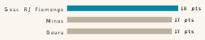
| Principal | Navajo Stirling nocauteia Jiří Procházka no 2º round |
| 🇧🇷 Vitória | Tallison Teixeira, por decisão unânime |
| 🇧🇷 Derrotas | Alessandro Costa e Nikolas Motta |
Leste: 76ers 14-3, Celtics 11-5, Pistons 10-5. Oeste: Spurs 14-3, Lakers 14-3, Timberwolves 12-5.
Superfinal em Interlagos, de 11 a 13/12. Na última tabela localizada, Felipe Fraga lidera com 813 pontos, à frente de Casagrande (680) e Di Mauro (676).
Kyle Larson é o campeão da Cup Series de 2026. Fechou a conta em Homestead, em 8/11.
João Fonseca encerrou a temporada por lesão abdominal e volta em 2027; deve terminar o ano perto do 45º lugar.
O jogo de hoje é às 21h. Assistir juntos ao 1º set e ver o resto nos melhores momentos protege o sono de quem tem aula ou plantão cedo.
49.405 pessoas na final do Brasileirão Feminino, no Morumbis: recorde para jogo entre clubes na América do Sul, segundo O Povo.
GTA VI. Lançado na quinta (19) para PS5 e Xbox Series, por US$ 79,99 nos EUA e sem versão para PC, o jogo da Rockstar recebeu nota 99 no Metacritic, a mesma de Baldur's Gate 3 e Ocarina of Time. Na Austrália, a rede nacional de internet bateu recorde de tráfego na madrugada do lançamento. A Take-Two não divulgou vendas; as estimativas do 1º dia vão de US$ 1,8 bilhão a cerca de US$ 4 bilhões e são só estimativas.
The Game Awards. A cerimônia é em 10/12, em Los Angeles. Concorrem a Jogo do Ano: 007 First Light, CONTROL Resonant, GTA VI, Phantom Blade Zero, Resident Evil Requiem e Zelda: Ocarina of Time.
Cinema. Jogos Vorazes: Amanhecer na Colheita estreou no Brasil em 19/11 e vendeu cerca de 320 mil ingressos nos dois primeiros dias, segundo a Filme B. A Nárnia de Greta Gerwig mudou de data: cinemas em 12/2/2027, com sessões IMAX a partir de 10/2, e Netflix em 2/4/2027.
Espaço. O James Webb encontrou um par de quasares de quando o universo tinha cerca de 900 milhões de anos. Em Marte, o rover Perseverance está em modo de segurança desde 30/10.
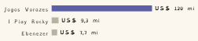
| Ter 24 | Superlua · Copa Davis |
| Sex 27 | Black Friday · F1 no Catar |
| Sáb 28 | Libertadores · Fortaleza |
| Dom 29 | Corrida no Catar |
| Qui 10/12 | The Game Awards |
Mundo aberto não tem fim de fase. Defina antes o ponto de parada, como "duas missões" ou "até 23h", e ponha o alarme longe do console.
Em cerca de 70% da floresta, a queda e a renovação das folhas acontecem em épocas separadas por pelo menos 3 meses, segundo estudo na Nature (18/11).
Perigeu: o ponto da órbita em que a Lua fica mais perto da Terra. "Superlua" é a lua cheia perto dele.
A nave de carga Cygnus XL, rumo à Estação Espacial, tem lançamento previsto para não antes de 29/11.
Nome dado pelos almanaques dos EUA à lua cheia de novembro, época em que os castores preparam as tocas para o inverno.
O mês. Segundo a Fenabrave, o Brasil emplacou 265,6 mil veículos em outubro, alta de 1,9% sobre outubro de 2025 e queda de 5,6% sobre setembro. De janeiro a outubro foram 2,52 milhões, 16,1% a mais que no mesmo período do ano passado.
As chinesas. Marcas de origem chinesa venderam 460,9 mil unidades no ano, o equivalente a 19,1% dos automóveis e comerciais leves. A disputa ficou mais forte nas faixas de SUV, elétricos e híbridos.
Novembro. No ranking parcial até o dia 18, compilado pela Webmotors, a picape Fiat Strada lidera com 7.786 unidades, à frente de VW Polo, VW Tera, Fiat Argo e VW T-Cross. O resultado fechado do mês sai no início de dezembro.
Contexto Preços e IPVA. O jornal não localizou nesta semana a tendência da tabela Fipe nem o calendário do IPVA 2027 do Ceará. São Paulo e Espírito Santo já divulgaram o seu. Quando a Sefaz-CE publicar, o tema volta aqui.
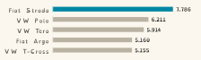
| No mês | 265,6 mil (+1,9% em 12 meses) |
| No ano | 2,52 milhões (+16,1%) |
| Chinesas | 460,9 mil · 19,1% |
Seguro e IPVA: peça cotação do modelo exato antes de fechar.
Revisões e pneus: consulte o plano da fabricante e o preço do jogo de pneus.
Desvalorização: carro é bem de consumo; perde valor todo ano.
Ficar 17 a 19 horas acordado prejudica a direção tanto quanto uma dose de álcool, mostrou um estudo clássico. Durma antes da estrada ou vá de carona.
"Última unidade com esse preço" é técnica de venda. Leve a proposta por escrito, durma três noites e compare.
| Golpe da semana | Como funciona | Como se defender |
|---|---|---|
| Loja clonada | Site copiado com ajuda de IA, preço muito abaixo e só Pix. | Entre pelo app ou digitando o endereço; confira CNPJ e domínio. |
| "Taxa de entrega" | Mensagem com link cobrando frete de encomenda "retida". | Não pague por link. Rastreie no site oficial da transportadora. |
| QR code adulterado | Código do Pix trocado em cartaz, boleto ou mensagem. | Antes de confirmar, leia o nome do recebedor na tela. |
| Falso advogado | Alguém cita seu processo real e pede pagamento para "liberar" valores. | Confira no Cadastro Nacional dos Advogados e ligue para o número que você já tinha. |
| Mão fantasma | Falsa central do banco pede para instalar app de acesso remoto. | Nunca instale app a pedido de quem ligou. Desligue e ligue você para o banco. |
Do Banco Central. Mostra contas, empréstimos e chaves Pix ligados ao seu CPF. Conta aberta que você não conhece? Acione o banco.
Pedido de devolução do Pix pelo app do banco, em até 80 dias. Rastreia o dinheiro mesmo repassado. Não cobre arrependimento nem chave digitada errada.
Reclamação direta à empresa, com prazo de resposta e registro público. O Procon da sua cidade atende quem prefere ir pessoalmente.
Anote hoje o preço dos itens da sua lista. Sem ele, não dá para saber se há desconto real na sexta.
O CNA e o ConfirmADV, da OAB, confirmam se quem fala com você é mesmo advogado. Denúncias: canal de fiscalização da OAB.
Oferta que "acaba em 10 minutos" é técnica de pressão. Feche o app, espere e volte com a lista.
Avise o banco na hora pelo app, peça o MED, bloqueie cartões, troque senhas e registre boletim de ocorrência. Quanto antes, maior a chance de recuperar.
A devolução deve ser vinculada à transação original, não um Pix novo. Assim o dinheiro volta rastreável a quem pagou.
| Item | Veredito | Por quê |
|---|---|---|
| Console em "pré-Black" (PS5, Switch 2, Xbox) | ⏳ Esperar o dia 27 | As ofertas antecipadas já estão no ar. Anote o preço hoje e compare na sexta em dois sites oficiais. |
| GTA VI (US$ 79,99 nos EUA) | 🟡 Só em loja oficial | Chave "barata" fora da loja do console é risco de golpe. Com plantão na semana, jogue na folga. |
| "Ações da Anthropic" por mensagem ou grupo | 🔴 Alerta de golpe | A ação é negociada na Nasdaq. Promessa de lucro garantido por WhatsApp é golpe. Isto não é recomendação. |
| Assinatura nova de IA | ⏳ Decidir após 72 h | Teste a versão gratuita por uma semana. Liste o que você usaria; cancele o que ficar parado. |
| Celular novo "com IA" | 📝 Preparar lista | O iOS 27.2.1 e a One UI 9 já atualizam aparelhos atuais. Troque só se o seu não recebe mais atualização. |
1ª parcela até 30/11, 2ª até 20/12. Ordem segura: dívida cara primeiro, depois reserva, e só então a compra que estava na lista.
Atualização de segurança fecha brecha usada em golpe. Ative a instalação automática no celular e no computador.
A Meta lançou um app separado só para mensagens do Instagram. Um app a mais é mais uma fonte de notificação: avalie antes de instalar.
Lançamento raramente baixa no mesmo mês. A pressa costuma ser o preço.
Compra pela internet tem 7 dias para arrependimento (CDC, art. 49), contados do recebimento.
O cenário. Na quinta (19), o dólar fechou a R$ 5,93, sexta alta seguida e maior valor desde abril de 2025. Na sexta (20), feriado aqui, a Nasdaq caiu 5,28% em Nova York (p.4). Em semanas assim, o impulso é mexer em tudo. A doutrina Bastter ensina o contrário.
De onde vem. O site Bastter.com, criado por Maurício Hissa, reúne há anos investidores pessoas físicas em torno de um método de acumulação de longo prazo. Os pilares, em paráfrase: o patrimônio vem da capacidade de gerar renda com o trabalho; os aportes são mensais e regulares; e não se tenta encontrar o "melhor momento" de entrar ou sair.
O que fica de fora. A filosofia Bastter inclui ações compradas para o longo prazo, em carteira diversificada. Este jornal não trata desse tema: quem quiser conhecê-lo deve ler a fonte original e falar com um profissional certificado.
Os números de hoje. A Selic segue em 13,75% desde 4/11, quando o Copom parou após cinco cortes; a próxima reunião é em 8 e 9/12. O CDI está perto de 13,65% ao ano. A poupança rende 0,5% ao mês mais TR enquanto a Selic passar de 8,5%; no aniversário de 1º/12, a TR de 0,1196% leva o mês a cerca de 0,62%. O IPCA de 12 meses está em 4,63%.
Imposto e garantia. O IR da renda fixa segue regressivo: 22,5% até 180 dias, 20% até 360, 17,5% até 720 e 15% depois. LCI e LCA continuam isentas para pessoa física, com prazo mínimo de 6 meses nos papéis sem IPCA.
Tesouro. Na leitura de 18/11, o Tesouro Selic 2031 pagava Selic + 0,1082% e o IPCA+ 2032, IPCA + 7,74%. O Tesouro Reserva, lançado em 11/5/2026, rende a Selic, aceita R$ 1, funciona 24 horas por dia, inclusive por Pix, e tem limite de R$ 500 mil por pessoa.
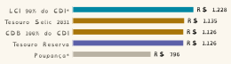
| FGC | Poupança, CDB, LCI, LCA: até R$ 250 mil por CPF por instituição; teto de R$ 1 milhão a cada 4 anos. |
| Tesouro | Títulos públicos: garantia do Tesouro Nacional, não do FGC. |
| Carência | LCI e LCA sem IPCA: 6 meses. |
Trabalhe bem, gaste menos do que ganha, aporte todo mês e não tente adivinhar o mercado.
1. Reserva de emergência com liquidez diária. 2. Objetivo com data: título que vence perto dela. 3. Longo prazo: aporte fixo, sem girar.
Um CDB de 100% do CDI rende cerca de 11,3% líquidos em 12 meses. Contra o IPCA passado de 4,63%, sobra perto de 6% de ganho real; a inflação futura pode ser outra.
Dólar subindo e "oportunidade imperdível" na mesma semana? Espere três dias, leia o contrato e consulte alguém de confiança. Quem tem pressa é quem vende.
Terreno. Só é dono quem registra a escritura no Cartório de Registro de Imóveis (Código Civil, art. 1.245). Antes de pagar, peça a matrícula atualizada com certidão de ônus reais e as certidões do vendedor. O ITBI é municipal: confira a alíquota na prefeitura. Na zona rural, imóvel exige georreferenciamento (Lei 10.267/2001), CCIR e ITR em dia.
Imóvel. A vice-presidente de Habitação da Caixa, Inês Magalhães, disse que o banco estuda subir os juros do crédito imobiliário e que a decisão depende do orçamento de 2027. A Caixa tem 68,2% do mercado. No Minha Casa, Minha Vida, as faixas vão até R$ 13 mil de renda e imóvel de R$ 600 mil. O IGP-M subiu 1,47% em outubro e 5,24% em 12 meses; o INCC-M, 0,35% no mês.
Veículo. Carro é, quase sempre, consumo: perde valor todo ano e cobra seguro, IPVA, revisão e combustível. Mesmo o que gera renda precisa entrar na conta com a depreciação. No usado: débitos, recall no gov.br, laudo cautelar e transferência no Detran.
Revenda. Comprar para revender com habitualidade torna você fornecedor pelo CDC. Formalize: em 2026, o MEI fatura até R$ 81 mil; a nova lei complementar leva o teto a R$ 110 mil em 2027 e R$ 140 mil em 2028. O comprador tem 30 dias para reclamar de defeito em bem não durável e 90 em durável (art. 26) e 7 dias de arrependimento na compra on-line (art. 49). Preço muito abaixo do mercado é alerta: comprar produto de crime é receptação (Código Penal, art. 180).
Golpes da semana. A Senacon alerta para maquiagem de preço e falsas promoções. Lojas clonadas com IA, "taxa de entrega" cobrada por link e QR code de Pix adulterado lideram os alertas. A OAB do Espírito Santo já recebeu mais de 1,3 mil denúncias do golpe do falso advogado. Na "mão fantasma", quem aplica o golpe finge ser o banco e pede para instalar um app de acesso remoto.
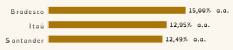
MED 2.0 pelo app do banco: até 80 dias para contestar Pix de golpe. Registrato (BC): contas e empréstimos no seu CPF. CNA da OAB: confirma o advogado. Consumidor.gov.br e Procon: reclamações. Consulta de recall no gov.br.
Matrícula com ônus · certidões do vendedor · IPTU ou ITR em dia · zoneamento na prefeitura · visita aos limites · nada de "contrato de gaveta".
Print do preço de hoje · CNPJ e reputação da loja · Pix só se o nome bater · cartão virtual · nota fiscal guardada · 72 h para compra acima do planejado.
O jornal não é advogado nem consultor. Em compra relevante: advogado, contador, corretor com Creci e, para investimentos, planejador certificado.
O dólar fechou a R$ 5,9344 na quinta (19), sexta alta seguida e maior valor desde abril de 2025. A Selic está em 13,75% desde 4/11; o próximo Copom é em 8 e 9/12.
A Câmara marcou sessão às 18h de hoje para o PLP 299, do ajuste fiscal, que mira a meta de 2027. Lei complementar precisa de 257 dos 513 votos; a votação pode seguir até terça (p.2).
A COP31, em Antalya, terminou no domingo (22), com dois dias extras, sem acordo principal e sem citar combustíveis fósseis. A COP32 será em Adis Abeba. O Brent fechou a US$ 92,57 na sexta (p.5).
O rubro-negro carioca empatou por 1 a 1 no sábado e fechou o título com 80 pontos. O alviverde decide a Libertadores no sábado (28). O tricolor cearense perdeu a ida por 1 a 0 e sobe com qualquer vitória no Castelão (p.12–13).
A superlua é amanhã (24), às 11h53. Os grandes estudos não acharam mais partos nem mais pacientes no pronto-socorro na lua cheia (p.24). O WhatsApp começou a liberar o agendamento de mensagens em 19/11. Calor de 38 °C sem chuva: Funceme (p.3).
A crença. Plínio, o Velho, no século I, achava que a Lua cheia mexia com os líquidos do corpo, e, por extensão, com o cérebro, que considerava o órgão mais úmido. A palavra lunático vem do latim luna. No Renascimento, Paracelso ligou fases da Lua a crises de loucura. Na Inglaterra, a lei usou "lunacy" até 1959, quando o Mental Health Act substituiu o Lunacy Act de 1890.
O que se mediu. Uma metanálise de 37 estudos, publicada em 1985 por Rotton e Kelly, não achou relação entre fase da Lua e internação psiquiátrica, crimes, suicídio ou chamadas de emergência. Nos EUA, um estudo de 2005 com 564 mil partos não viu efeito previsível da Lua no número de nascimentos nem nas complicações. No pronto-socorro, a lua cheia também não aumentou o volume de pacientes.
Onde há dúvida. O sono. Em 2013, um estudo suíço com 33 voluntários viu, perto da lua cheia, cerca de 20 minutos a menos de sono e menos sono profundo. Outros grupos não repetiram o achado. Em 2021, comunidades indígenas na Argentina e universitários em Seattle dormiram mais tarde e menos nas noites antes da cheia. É hipótese, não regra.
O que é fato. A superlua acontece quando a Lua cheia coincide com o perigeu, o ponto mais próximo da Terra. Ela parece até 14% maior e cerca de 30% mais brilhante que a cheia mais distante do ano. As marés de sizígia sobem um pouco mais. O plantão, não.
| Ideia | Hoje |
|---|---|
| Lua cheia lota o pronto-socorro | 🔴 Não confirmado |
| Nascem mais bebês na cheia | 🔴 Não confirmado |
| Lua cheia piora crises psiquiátricas | 🔴 Não confirmado |
| Lua cheia encurta um pouco o sono | 🟡 Achados mistos |
| Perigeu deixa a maré mais alta | ✅ Física das marés |
Rezadeiras e benzedeiras do Ceará guardam a tradição de plantar, podar e cortar cabelo "na lua certa", e os profetas da chuva leem o céu para prever o inverno. Com o El Niño "muito forte" e 65 municípios em emergência, a previsão oficial da quadra chuvosa é da Funceme; a tradição é patrimônio cultural, não boletim. No Vale do Acaraú, fé popular e consultório costumam caminhar lado a lado.
A lenda. Na Itália do século XVII, relatos falam da aqua tofana, líquido incolor vendido como cosmético e atribuído a uma mulher chamada Giulia Tofana. A fórmula nunca foi provada; o mais provável é arsênico. Na França, o "pó de sucessão", de arsênico, ganhou fama no Caso dos Venenos (1677–1682), que levou à fogueira a cartomante conhecida como La Voisin, em 1680, sob Luís XIV.
Astrólogos na corte. No século XVI, Catarina de Médici, rainha da França, consultava astrólogos como Nostradamus, que publicou as Profecias em 1555. Previsão e veneno andavam juntos no imaginário do poder: quem sabia o futuro parecia saber também quem ia morrer.
A virada. Em 1836, o químico inglês James Marsh criou um teste que detecta traços de arsênico. Em 1840, na França, Mathieu Orfila usou a química no julgamento de Marie Lafarge, um marco da toxicologia forense. O veneno "invisível" começava a deixar rastro.
A memória. Há 20 anos, em 23/11/2006, morreu em Londres o ex-agente russo Alexander Litvinenko, envenenado com polônio-210, emissor alfa que os detectores comuns quase não percebem. O inquérito público britânico de 2016 concluiu que a operação foi "provavelmente aprovada" pelo presidente russo; a Corte Europeia de Direitos Humanos responsabilizou a Rússia em 2021. Moscou nega envolvimento.
No Caso dos Venenos, a tortura arrancou confissões e acusações em cadeia; dezenas foram executados. O medo do veneno invisível alimentou o pânico. Hoje, quem decide é o laboratório, com cadeia de custódia, não o boato.
| 22/11 | Cristo Rei (católicos) |
| 23/11 | Ação de Graças do Trabalho (Japão) |
| 25/11 | Santa Catarina de Alexandria |
| 26/11 | Ação de Graças (EUA) |
| 29/11 | 1º domingo do Advento |
A CID-11, em vigor desde 2022, tem um módulo de condições da medicina tradicional. A OMS mantém em Jamnagar, na Índia, um centro global dedicado ao tema e cobra das práticas a mesma prova de segurança e eficácia.
Tóxico: do grego toxikón, o veneno de passar na flecha, de tóxon, "arco". Veneno: do latim venenum, que uma hipótese liga a Vênus, como "poção do amor".
1. Que elemento matou Litvinenko? 2. Em que ano surgiu o teste de Marsh? 3. Por que o polônio-210 escapa dos detectores comuns? 4. Queda de cabelo, vômitos e queda das células do sangue lembram o quê? Respostas: polônio-210 · 1836 · emite partículas alfa · radiação ou tálio, entre outras causas.
✝️ Bíblia · Lucas 17:15–17
Dez homens com lepra são curados; só um volta para agradecer. "Não foram dez os curados?"
Reflexão: a cura chegou para todos; o encontro, só para quem voltou. Gratidão completa o que o cuidado começou. Hoje: volte a quem te ajudou e diga o que mudou na sua vida.
✡️ Torá · Deuteronômio 8:10
"Comerás, te fartarás e bendirás."
Reflexão: o versículo funda a bênção depois da refeição; ao acordar, a oração Modé Aní começa com "agradeço". O dia abre e fecha com obrigado. Hoje: agradeça por uma refeição antes de pegar o celular.
📜 Talmude · Berakhot 58a (Ben Zomá)
O bom hóspede diz: "Quanto trabalho o anfitrião teve por mim!"
Reflexão: enxergar o esforço invisível do outro é o começo da gratidão, e o mau hóspede só vê o que faltou. Hoje: agradeça pelo nome a quem limpa, cozinha ou organiza o seu plantão.
☪️ Alcorão · Suratas 14:7 e 31:12
"Se agradecerdes, certamente vos aumentarei." · "Quem agradece, agradece para si mesmo."
Reflexão: shukr, a gratidão, multiplica o bem e beneficia primeiro quem agradece. Hoje: antes de pedir algo novo, liste três coisas que já tem.
☯️ Provérbio chinês · 饮水思源
"Ao beber a água, lembre-se da fonte."
Reflexão: a tradição confuciana honra pais e mestres como a fonte de onde veio o que sabemos. Esquecer a fonte é secar o poço. Hoje: mande mensagem a um professor que marcou sua formação.
☸️ Budismo · Anguttara Nikaya 2 (Dullabha Sutta)
Duas pessoas são raras no mundo: quem faz o bem primeiro e quem reconhece o bem recebido.
Reflexão: kataññu, "quem sabe o que foi feito", é virtude rara, por isso preciosa. Hoje: seja os dois: ajude sem esperar volta e agradeça sem demora.
| Ideia | Onde aparece |
|---|---|
| Voltar para agradecer | Lucas 17, Tirukkural 110 |
| Ver o esforço invisível | Berakhot 58a, Ubuntu, Sêneca |
| Gratidão multiplica o bem | Alcorão 14:7, Dullabha Sutta |
| Lembrar a fonte | Provérbio chinês, Deuteronômio 8, Mojubá |
Quem cuidou de você num momento difícil e nunca ouviu um obrigado completo? Escreva o nome e uma frase concreta.
Em português, "fico obrigado", isto é, em dívida com você. Em japonês, arigatō vem de "difícil de existir": o favor é raro. Cícero chamou a gratidão de mãe de todas as virtudes.
| Estudo | O que mostrou | O que levar |
|---|---|---|
| Kumar e Epley, 2018 | Quem escreve um bilhete de agradecimento subestima o quanto o destinatário fica feliz e superestima o constrangimento. | Mande a mensagem: vale mais do que você imagina. |
| Jones et al., 2010 | Diário escrito pela equipe e pela família durante a internação na UTI: estresse pós-traumático novo em 5% × 13% sem diário. | Registrar o cuidado também é cuidar. |
| Cheng et al., 2015 | Profissionais de saúde em Hong Kong que anotaram motivos de gratidão por 4 semanas relataram menos estresse e sintomas depressivos. | Dois minutos ao fim do plantão. |
| Emmons e McCullough, 2003 | Listas semanais de gratidão por 10 semanas: mais otimismo e menos queixas físicas que listas de aborrecimentos. | Hábito curto e constante. |
No Japão, o Kinrō Kansha no Hi, feriado desde 1948, herdou a antiga festa da colheita e hoje agradece a quem trabalha. Nos EUA, a Ação de Graças cai na quarta quinta-feira de novembro, este ano no dia 26. No Brasil, uma lei de 1949 criou o Dia Nacional de Ação de Graças, hoje também na quarta quinta-feira de novembro.
A cura dos dez leprosos de Lucas 17 tem eco hoje: o Brasil é o 2º país em casos novos de hanseníase no mundo, atrás da Índia. O tratamento é gratuito no SUS e cura. Quem volta à consulta, termina o tratamento e leva a família para examinar fecha o ciclo.
Gratidão não é dívida eterna. Quem faz um favor e depois cobra obediência, silêncio ou dinheiro transforma o agradecimento em coleira: é uma forma conhecida de manipulação. Agradecer não obriga a aceitar o que fere.
Antes de dormir: 1. Quem me ajudou hoje? 2. A quem eu agradeci de verdade? 3. Quem merece um obrigado que eu ainda devo?
🧠 Recuperação ativa: 1. Quantos dos dez curados voltaram em Lucas 17? 2. Em que tratado do Talmude está o "bom hóspede"? 3. Qual foi a taxa de estresse pós-traumático com diário de UTI no estudo de 2010? Respostas: um · Berakhot 58a · 5% × 13%.
Gratidão e espera. Em 2014, pesquisadores de Boston e Harvard induziram emoções em voluntários antes de uma escolha: dinheiro agora ou mais dinheiro depois. Quem foi levado a sentir gratidão aceitou esperar mais pela quantia maior; alegria e estado neutro não tiveram o mesmo efeito. Agradecer, ao que parece, acalma a pressa.
O efeito cartão. Num leilão fechado de ingressos, estudantes do MIT que pagariam com cartão de crédito ofereceram valores muito maiores do que os que pagariam em dinheiro. Pagar sem ver o dinheiro sair dói menos, e por isso se gasta mais. Na sexta, defina antes o teto e o meio de pagamento.
TDAH e espera. Desde os anos 1990, o modelo da "aversão à espera" descreve que, no TDAH, esperar custa mais caro do que para outras pessoas; o cérebro prefere a recompensa pequena e imediata. Não é falta de caráter. É um traço que pede ambiente preparado: lista, prazo e alguém de confiança.
Se-então. Planos no formato "se eu vir uma oferta fora da lista, então salvo o link e espero 72 horas" funcionam melhor do que a intenção genérica de "não gastar". Uma metanálise de 94 estudos achou efeito de tamanho médio a grande dessas "intenções de implementação".
Caráter. Carlos Chagas descreveu, em 1909, em Lassance (MG), o parasita, o inseto transmissor e a doença que leva seu nome, feito raro na história da medicina, fruto de paciência no campo. Bertha Lutz, bióloga do Museu Nacional, lutou anos pelo voto feminino, conquistado em 1932, e foi uma das quatro mulheres que assinaram a Carta da ONU, em 1945.
| Gratidão aumenta a paciência na escolha | ✅ |
| Cartão faz gastar mais que dinheiro vivo | ✅ |
| Plano "se-então" ajuda a cumprir metas | ✅ |
| Comprar alivia a tristeza por muito tempo | 🟡 alívio curto |
| Simpatia para "atrair dinheiro" | ✨ |
1. Eu compraria isto pelo preço cheio? 2. Cabe no orçamento deste mês sem parcelar? 3. Onde vai ficar guardado? Duas respostas "não": salve o link e espere 72 horas.
Transforme a espera em tarefa: crie a lista "quero", com data de revisão daqui a 3 dias. Desligue as notificações de lojas até sábado. Quem divide as finanças com alguém combina antes um valor-limite.
Leitura cultural e simbólica: num teste duplo-cego publicado na Nature em 1985, astrólogos não acertaram perfis acima do acaso. Use como lembrete de atitude, nunca como decisão.
Janela aberta no começo da manhã e fechada no pico do calor ✅, garrafa de água à vista 🟡, cartão de crédito longe do celular nesta semana 🟡, uma vela ou planta como ponto de calma ✨. Roupa leve e clara no calor de 38 °C.
| Planta | Tradição ✨ | O que se sabe |
|---|---|---|
| Cajueiro | Fartura | O caju é pseudofruto; a castanha crua irrita a pele |
| Carnaúba | Árvore da vida | Símbolo do Ceará; cera reveste comprimidos |
| Aroeira | Cura de feridas | Na lista de plantas de interesse do SUS |
| Manjericão | Proteção | Aroma e cozinha; sem efeito "energético" medido |
Planta medicinal só com orientação: natural não é sinônimo de seguro.
Em Ajustes › Foco › + › Personalizado, crie "Compras" e silencie os apps de lojas até sábado. Menos notificação, menos impulso.
Command + Shift + 4 recorta a tela. Guarde o anúncio com preço e data: a oferta publicada obriga a loja (CDC, art. 30) e ajuda no Procon.
A KB5132061 de novembro dá erro em alguns PCs. Em Configurações › Windows Update, pause por uma semana ou instale pelo Microsoft Update Catalog.
O recurso chega aos poucos desde 19/11, com no mínimo 10 minutos de antecedência. Bom para lembrar plantão, consulta e aniversário.
Loja com desconto enorme? Consulte o domínio .br no registro.br e o CNPJ na Receita. Site criado há poucos dias é sinal de golpe.
Na sua loja, mostre o preço anterior real. Desconto inventado é publicidade enganosa (CDC, art. 37) e derruba a confiança.
Um imprimível com lista, teto e regra das 72 h. Diga que usou IA, revise tudo, use imagens próprias ou licenciadas e não prometa resultado.
Semana cheia de notícia e oferta. Escolha uma prioridade por dia e escreva onde dá para ver. O resto espera a sexta à tarde.
Flamengo campeão, ajuste fiscal na Câmara às 18h, dólar e bolsas americanas sob pressão. Na UTI, o cérebro vive da pressão de perfusão: PPC = PAM − PIC. Fora dela, nenhuma compra por impulso.
Hoje, em 5 minutos, escreva a sua lista de compras da Black Friday com teto em reais. O que não estiver nela espera 72 horas.
Baixar a pressão rápido demais na emergência hipertensiva · Pix para recebedor com outro nome · "central do banco" pedindo app · comprar no plantão · decidir investimento pela manchete do dia.
Jornal Diário 360 · Radar 360 Circunstancial · Ano I, nº 017 · fechamento na noite da véspera, 22/11/2026, por volta das 23h30, com resultados do fim de semana e a agenda de segunda. Produzido pelo Agente Editorial 360 com o Claude (Anthropic); a Anthropic, que estreou na bolsa nesta semana, aparece na p.11. Nesta edição de 30 páginas: esportes (p.12–15), educação financeira sem renda variável (p.20–21), tirinhas com personagens próprios (p.22–23), Arcanos (p.24–25), Honra 360 e Equilíbrio 360 (p.26–29). Em saúde, siga o protocolo institucional; em finanças e compras, não há recomendação nem comissão. Gráficos e ilustrações originais; nenhuma foto de terceiros. Texto em OpenDyslexic.